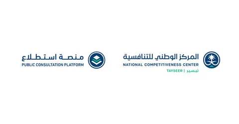
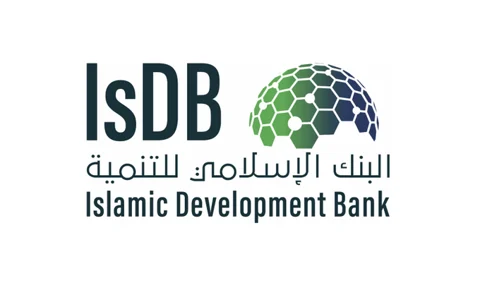

الصحيفة السعودية الاولى
- 

- 
اخر الاخبار
more"الأخضر" يعلن قائمته في كأس آسيا 2023
وضمّت القائمة كلاً من: "نواف العقيدي وراغد نجار وأحمد الكسار، وحسين كادش وعلي البليهي وعون السلولي وحسان التمبكتي وعلي لاجامي وسعود عبدالحميد وناصر الدوسري وعبدالله الخيبري ومختار علي وعبدالله المالكي وعيد المولد وفواز الصقور وسالم الدوسري وفيصل الغامدي وعباس الحسن ومحمد كنو وسامي النجعي وعبدالرحمن غريب وأيمن يحيى، وفهد المولد وعبدالله رديف وفراس البريكان وصالح الشهري"
read more
بـ24.98 مليون دولار.. الصندوق الاستئماني الإنساني لأفغانستان يُبرم 7 اتفاقيات مع وكالات أممية ومؤسسات
حقق الصندوق الاستئماني الإنساني لأفغانستان (صندوق أفغانستان) الذي يديره ويشرف عليه البنك الإسلامي للتنمية كمستأمن، إنجازًا هامًّا بالدخول في اتفاقيات لتنفيذ 7 مشاريع جديدة مع وكالات أممية ومؤسسات إقليمية بتكلفة إجمالية تبلغ 24.98 مليون دولار، يساهم فيها صندوق أفغانستان بمبلغ 16.05 مليون دولار؛ مما يعزز التزام الصندوق بتسريع وتيرة المساعدات الإنسانية والتنمية المستدامة في أفغانستان، كما وقّع البنك الإسلامي للتنمية نيابة عن صندوق أفغانستان، 3 اتفاقيات مع المفوضية السامية للأمم المتحدة لشؤون اللاجئين. بـ24.98 مليون دولار.. الصندوق الاستئماني الإنساني لأفغانستان يُبرم 7 اتفاقيات مع وكالات أممية ومؤسسات read more
بتعاون 16 جهة حكومية.. "استطلاع" تطرح 20 مشروعاً اقتصادياً وتنموياً لإبداء المقترحات
تم النشر في: 02 يناير 2024, 12:28 مساءً طرحت منصة "استطلاع" التابعة للمركز الوطني للتنافسية، 20 مشروعاً ذا صلة بالشأنين الاقتصادي والتنموي، بالتعاون مع 16 جهة حكومية؛ لتمكين العموم والجهات الحكومية والقطاع الخاص من إبداء المرئيات والمقترحات حولها قبل إقرارها. وأبرز المشروعات المطروحة في المنصة مشروع "لائحة التعليم الإلكتروني"؛ ويهدف منه المركز الوطني للتعليم الإلكتروني، إلى تنظيم نشاط التعليم والتدريب الإلكتروني في المملكة بما يحقق غاياته، ويضبط جودته، ويعزز الثقة به، وينتهي الاستطلاع على المشروع بتاريخ 11 يناير 2024م. وانطلاقاً من دوره الإشرافي والرقابي على المؤسسات المالية، وتماشياً مع التطورات التنظيمية، طرح البنك المركزي السعودي مشروع "تعديل المبادئ الرئيسة للحوكمة في المؤسسات المالية الخاضعة لرقابة وإشراف البنك المركزي السعودي"؛ بهدف تعديل بعض أحكام المبادئ الرئيسة للحوكمة في المؤسسات المالية بما يتواءم مع نظام الشركات ولوائحه التنفيذية، وذلك من خلال تحديد التغيرات التي طرأت عليه وتتقاطع مع أحكام البنك ذات العلاقة بالحوكمة، مع الأخذ بعين الاعتبار طبيعة القطاع المالي وأفضل الممارسات والمعايير الدولية في شأنه، وينتهي الاستطلاع على المشروع بتاريخ 11 يناير 2024م. بتعاون 16 جهة حكومية.. "استطلاع" تطرح 20 مشروعاً اقتصادياً وتنموياً لإبداء المقترحات
read more
مقابلة
دولية
moreينقضي اليوم العام الأسوأ في تاريخ أبناء مدينة غزة، دون أن تظهر في الأفق بوادر لتغير الحال في العام الجديد.
سكان غزة: هل يتغير الحال. أكثر من 21 ألف شهيد في الربع الأخير من 2023
وليلة أمس نفذت إسرائيل هجمات عنيفة بالطائرات والدبابات على مدينة خان يونس في قطاع غزة، فيما قال مسؤول كبير بوزارة الصحة الفلسطينية إن نحو مئة فلسطيني قتلوا وأصيب 158 في ضربات إسرائيلية على وسط قطاع غزة خلال الساعات الأربع والعشرين الماضية من يوم أمس الأول. وقال مسعفون وصحافيون فلسطينيون إن الطيران الإسرائيلي نفذ أيضاً سلسلة غارات جوية على مخيم النصيرات وسط قطاع غزة. ووفقاً لتلفزيون فلسطين شن الجيش الإسرائيلي قصفاً مدفعياً كثيفاً على شرق معبر رفح جنوب قطاع غزة، فيما أعلنت وزارة الصحة في قطاع غزة أمس ارتفاع عدد قتلى الحرب التي تشنها إسرائيل في القطاع منذ السابع من أكتوبر إلى 21 ألفاً و507 قتلى، وإصابة 55915 وهو الأمر الذي قد يرفع عدد القتلى المسجلين إلى 22 ألفاً في نهاية 2023. وقال مسؤول في وزارة الصحة الفلسطينية إن 100 شخص على الأقل قتلوا فيما أصيب نحو 160 آخرون في ضربات إسرائيلية عنيفة استهدفت وسط غزة في الساعات الأربع والعشرين الماضية من يوم أمس الأول. كما نفذت إسرائيل هجمات عنيفة بالطائرات والدبابات على مدينة خان يونس. من جانبها أعلنت الحكومة الأمريكية الجمعة أنها وافقت «بشكل طارئ»، من دون المرور بالكونجرس، على بيع ذخائر مدفعية لإسرائيل بقيمة 147,5 مليون دولار. بدوره، أعرب المدير العام لمنظمة الصحة العالمية تيدروس أدهانوم غبرييسوس عن قلق بالغ من تزايد خطر انتشار الأمراض المعدية في قطاع غزة في ظل النزوح والظروف الإنسانية الناتجة عن الحرب بين إسرائيل وحماس. وكتب تيدروس عبر منصة إكس «مع استمرار نزوح الناس بشكل هائل على امتداد جنوب (قطاع) غزة، واضطرار بعض العائلات للنزوح أكثر من مرة، واتخاذ الكثيرين من منشآت صحية مكتظة ملجأ لهم، نبقى أنا وزملائي في منظمة الصحة العالمية قلقين جداً حيال تزايد خطر الأمراض المعدية». وأضاف «من منتصف أكتوبر إلى ديسمبر، تواصلت إصابة الأشخاص الذين يعيشون في ملاجئ بأمراض». وقال تيدروس إن حوالى 180 ألف شخص عانوا من التهابات في الجهاز التنفسي العلوي، بينما تم تسجيل 136400 حالة إسهال نصفها من الأطفال دون سن الخامسة. وقتل فلسطينيان الجمعة برصاص الجيش الإسرائيلي في الضفة الغربية المحتلة، أحدهما بعد الاشتباه بتنفيذه عملية دهس بسيارة أدت إلى إصابة أربعة إسرائيليين، والآخر لمحاولته إلقاء قنبلة على موقع عسكري، وفق الجيش. وأوردت وكالة الأنباء الفلسطينية الرسمية (وفا) أن الشاب محمود عثمان ورني «استشهد... برصاص قوات الاحتلال الإسرائيلي مساء اليوم الجمعة في بلدة العيزرية شرق القدس المحتلة»، مشيرة إلى أنه «ارتقى بعد إصابته برصاص قوات الاحتلال في مواجهات» بالبلدة. سياسياً واقتصادياً وعسكرياً، أعلنت الحكومة الأمريكية أنها وافقت «بشكل طارئ»، من دون المرور بالكونجرس، على بيع ذخائر مدفعية لإسرائيل بقيمة 147,5 مليون دولار. و كانت واشنطن قد وافقت بشكل طارئ أيضاً في 9 ديسمبر على بيع إسرائيل ما يقرب من 14 ألف قذيفة دبابة عيار 120 ملم لاستخدامها في حربها ضد حماس في قطاع غزة. وقالت وكالة التعاون الأمني الدفاعي الأمريكية في بيان إن إسرائيل طلبت إضافة صمامات ومفجرات وقذائف عيار 155 ملم إلى طلب البيع السابق، ما يزيد كلفته الإجمالية المقدرة من 96,51 مليون دولار إلى 147,5 مليون دولار ويتطلب إخطاراً جديداً. وقال وزير الخارجية أنتوني بلينكن إن «هناك حالة طوارئ تتطلب هذا البيع الفوري للحكومة الإسرائيلية»، ما يتيح عدم عرض الطلب على الكونجرس ليراجعه، بحسب البيان الذي قال إن الذخائر ستأتي من مخزونات الجيش الأمريكي